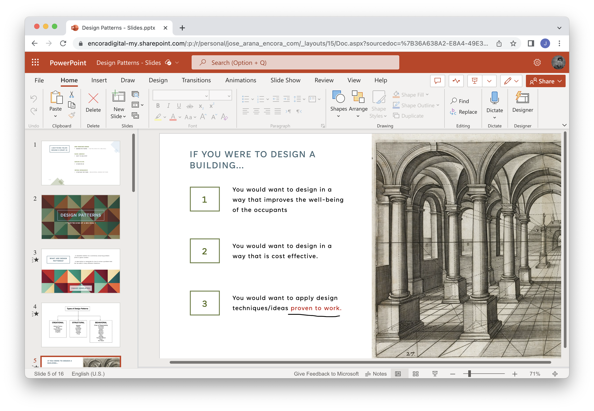
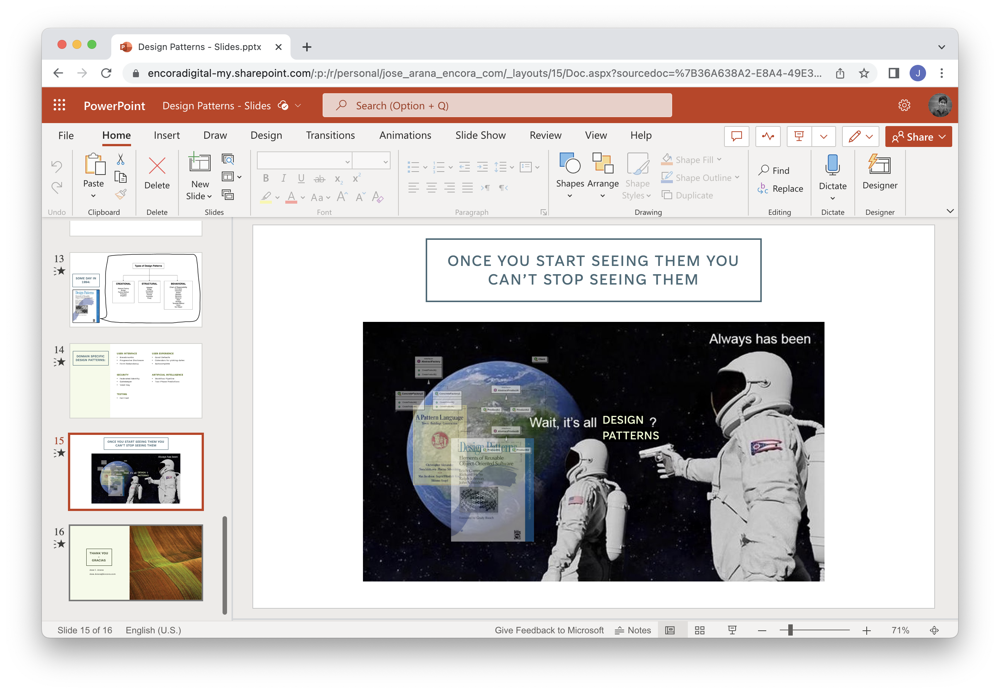

Week 11: Lightning Talks: Part 3
(June 24 - June 30) Design Patterns Ignite Talk
I decided to do my final Lightning Talk on Design Patterns, specifically about the origin of design patterns in architecture and how they ended up as an integral part of computer science.
I'm an architecture grad, and I love architecture as much as I love technology. Two of my favorite books on Architecture are "A Pattern Language" and "The Timeless Way of Building" by Christopher Alexander. To me those two relatively obscure books are essentially the holy books of Architecture. My fanatism aside they were also very influential outside of that field, being the originators of Design Patterns, that's why I decided to do the final talk on that topic, since this was a perfect chance to talk about something I like.
I found the ignite format pretty challenging, 5 minutes of 15 second slides comes to a total of 20 slides. Since I'm used to doing one slide for each minute of presentation it felt like a lot of slides to fill. Once I got into rhythm I understood the advantages of the format though, I likened it to some guides for making videos for social media, where even 15 seconds without changing the content on the screen can feel like a long time.
It lends itself better for humour as well, since if a joke on a slide falls flat the public is only looking at it for an instant before moving to something else.

In the end though I couldn't get all 20 slides, I settled for 15 slides with a duration of 20 seconds each (not including title and end slides) which seemed pretty close to the goal.
I first tried to get someone on board to do our talk on tuesday 27 since on wednesday I would leave on a trip to Aguascalientes. Since it was still too early I instead got together with Hugo, Adrian and Bryan for the final talk on friday 30, the only other day I could fit into my trip's schedule. Everything went mostly smooth during the talks, it was a good wrap to the module.
After finishing the Lightning Talks we were tasked with the Open Source module. I've wanted to contribute with FOSS but it feels just a bit intimidating to actually do it. I think it will be a fun challenge.
Uploaded on July 3, 2023